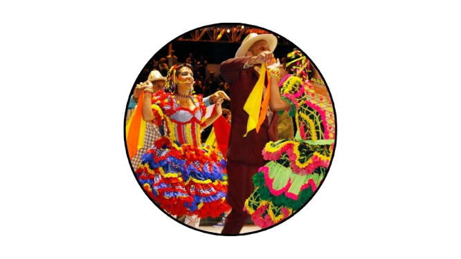
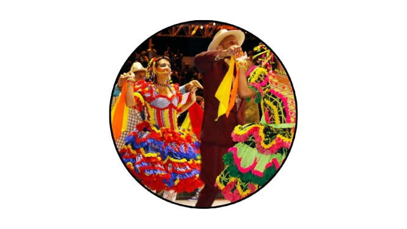

Festival das Quadrilhas Juninas
Descrição: Apresentações de quadrilhas tradicionais e estilizadas com muito forró, figurinos, alegria e cultura popular nordestina.
Descrição: Apresentações de quadrilhas tradicionais e estilizadas com muito forró, figurinos, alegria e cultura popular nordestina.
